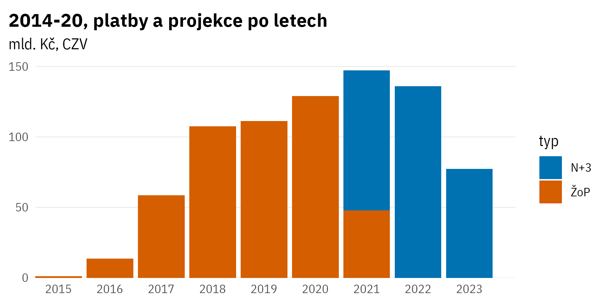

Výstup: dokumentace, validace
Dokumentace hlavního výstupu
Soubory
Vše v data-export/export_202112 (Github)
Data s krajským rozpadem obsahují sloupec s kódem NUTS3.
CSV soubory uzpůsobeny pro Excel (úprava konce řádků) a CEE region (odděleno středníky, desetinná čárka).
Standardní ze ŽOP
- součty po letech:
macro-sum_reg_quarterly.csv/macro-sum_reg_quarterly.xlsx - součty po čtvrtletích:
macro-sum_annual.csv/macro-sum_annual.xlsx
Dopočet N+3
Pouze roční členění.
Dva rozdíly v názvech sloupců (viz codebook):
- součty výdajů se jmenují
fin_zbyva_* - proměnná času se jmenuje
dt_nplus3_rok
K metodě dovození projekce N+3 viz dokumentaci projektu.
- součty po letech, bez regionů:
macro-sum-nplus3.csv/macro-sum-nplus3.xlsx - součty po letech, s regiony:
macro-sum_reg_nplus3.csv/macro-sum_reg_nplus3.xlsx
Codebook
Standardní ze ŽOP
| Pointblank Information |
|---|
| Codebook hlavního výstupu
tibble
compiled_macro_sum_quarterlyRows
6,269
Columns
42
|
| Table |
INFOTabulka se součty výdajů podle času, kraje, kategorie QUEST/HERMIN, TC DoP a cíle EU2020 |
NOTEPlatí pro data po kvartálech a analogicky i pro roční data Pro data z ŽOP i pro projekci N+3 |
CELKOVÁ STRUKTURAdlouhý formát: čas a kraj jsou v řádcích, metadata a jednotlivé zdroje financí jsou ve sloupcích |
NÁZVY PROMĚNNÝCHplatí i pro ostatní datové sady v pipeline:
|
| Columns |
POPIS Rok proplacení ŽOP ZDROJ DAT Datum proplacení ŽOP TYP Časový údaj (datum) |
POPIS Kategorie pro QUEST |
POPIS Kategorie pro HERMIN |
POPIS Zdroj dat (MSSF/MSEU nebo SZIF (PRV)) |
POPIS Cíl EU 2020 ZDROJ Matice cílů od NOK |
POPIS Kvartál proplacení ŽOP ZDROJ DAT Datum proplacení ŽOP TYP Časový údaj (datum) |
POPIS Kvartál proplacení ŽOP První den kvartálu ZDROJ DAT Datum proplacení ŽOP Datum proplacení ŽOP TYP Časový údaj (datum) |
POPIS Kód NUTS3 (kraj) |
TYP Finance JEDNOTKA CZK ZDROJ DAT ŽOP sečtené podle data proplacení ZDROJ FINANCÍ Veřejné (EU + ČR) |
TYP Finance JEDNOTKA CZK ZDROJ DAT ŽOP sečtené podle data proplacení ZDROJ FINANCÍ Celkové způsobilé výdaje VÁHA Počet obyvatel obcí, kde se projekt realizuje |
TYP Finance JEDNOTKA CZK ZDROJ DAT ŽOP sečtené podle data proplacení ZDROJ FINANCÍ Příspěvek Unie VÁHA Počet obyvatel obcí, kde se projekt realizuje |
TYP Finance JEDNOTKA CZK ZDROJ DAT ŽOP sečtené podle data proplacení ZDROJ FINANCÍ Státní rozpočet VÁHA Počet obyvatel obcí, kde se projekt realizuje |
TYP Finance JEDNOTKA CZK ZDROJ DAT ŽOP sečtené podle data proplacení ZDROJ FINANCÍ Státní fondy VÁHA Počet obyvatel obcí, kde se projekt realizuje |
TYP Finance JEDNOTKA CZK ZDROJ DAT ŽOP sečtené podle data proplacení ZDROJ FINANCÍ Kraj VÁHA Počet obyvatel obcí, kde se projekt realizuje |
TYP Finance JEDNOTKA CZK ZDROJ DAT ŽOP sečtené podle data proplacení ZDROJ FINANCÍ Obec VÁHA Počet obyvatel obcí, kde se projekt realizuje |
TYP Finance JEDNOTKA CZK ZDROJ DAT ŽOP sečtené podle data proplacení ZDROJ FINANCÍ Jiné národní VÁHA Počet obyvatel obcí, kde se projekt realizuje |
TYP Finance JEDNOTKA CZK ZDROJ DAT ŽOP sečtené podle data proplacení ZDROJ FINANCÍ Soukromý VÁHA Počet obyvatel obcí, kde se projekt realizuje |
TYP Finance JEDNOTKA CZK ZDROJ DAT ŽOP sečtené podle data proplacení ZDROJ FINANCÍ Národní Veřejné (EU + ČR) VÁHA Počet obyvatel obcí, kde se projekt realizuje |
TYP Finance JEDNOTKA CZK ZDROJ DAT ŽOP sečtené podle data proplacení ZDROJ FINANCÍ Národní VÁHA Počet obyvatel obcí, kde se projekt realizuje |
TYP Finance JEDNOTKA CZK ZDROJ DAT ŽOP sečtené podle data proplacení ZDROJ FINANCÍ Veřejné (EU + ČR) VÁHA Počet obyvatel obcí, kde se projekt realizuje |
TYP Finance JEDNOTKA CZK ZDROJ DAT ŽOP sečtené podle data proplacení ZDROJ FINANCÍ Celkové způsobilé výdaje VÁHA 1/počet krajů, kde se projekt realizuje |
TYP Finance JEDNOTKA CZK ZDROJ DAT ŽOP sečtené podle data proplacení ZDROJ FINANCÍ Příspěvek Unie VÁHA 1/počet krajů, kde se projekt realizuje |
TYP Finance JEDNOTKA CZK ZDROJ DAT ŽOP sečtené podle data proplacení ZDROJ FINANCÍ Státní rozpočet VÁHA 1/počet krajů, kde se projekt realizuje |
TYP Finance JEDNOTKA CZK ZDROJ DAT ŽOP sečtené podle data proplacení ZDROJ FINANCÍ Státní fondy VÁHA 1/počet krajů, kde se projekt realizuje |
TYP Finance JEDNOTKA CZK ZDROJ DAT ŽOP sečtené podle data proplacení ZDROJ FINANCÍ Kraj VÁHA 1/počet krajů, kde se projekt realizuje |
TYP Finance JEDNOTKA CZK ZDROJ DAT ŽOP sečtené podle data proplacení ZDROJ FINANCÍ Obec VÁHA 1/počet krajů, kde se projekt realizuje |
TYP Finance JEDNOTKA CZK ZDROJ DAT ŽOP sečtené podle data proplacení ZDROJ FINANCÍ Jiné národní VÁHA 1/počet krajů, kde se projekt realizuje |
TYP Finance JEDNOTKA CZK ZDROJ DAT ŽOP sečtené podle data proplacení ZDROJ FINANCÍ Soukromý VÁHA 1/počet krajů, kde se projekt realizuje |
TYP Finance JEDNOTKA CZK ZDROJ DAT ŽOP sečtené podle data proplacení ZDROJ FINANCÍ Národní Veřejné (EU + ČR) VÁHA 1/počet krajů, kde se projekt realizuje |
TYP Finance JEDNOTKA CZK ZDROJ DAT ŽOP sečtené podle data proplacení ZDROJ FINANCÍ Národní VÁHA 1/počet krajů, kde se projekt realizuje |
TYP Finance JEDNOTKA CZK ZDROJ DAT ŽOP sečtené podle data proplacení ZDROJ FINANCÍ Veřejné (EU + ČR) VÁHA 1/počet krajů, kde se projekt realizuje |
TYP Finance JEDNOTKA CZK ZDROJ DAT ŽOP sečtené podle data proplacení ZDROJ FINANCÍ Celkové způsobilé výdaje VÁHA Váha zvolena podle proměnné DETAIL podle krajů pro RD, AIS, TA; podle počtu obyvatel obcí pro INFR a HC |
TYP Finance JEDNOTKA CZK ZDROJ DAT ŽOP sečtené podle data proplacení ZDROJ FINANCÍ Příspěvek Unie VÁHA Váha zvolena podle proměnné DETAIL podle krajů pro RD, AIS, TA; podle počtu obyvatel obcí pro INFR a HC |
TYP Finance JEDNOTKA CZK ZDROJ DAT ŽOP sečtené podle data proplacení ZDROJ FINANCÍ Státní rozpočet VÁHA Váha zvolena podle proměnné DETAIL podle krajů pro RD, AIS, TA; podle počtu obyvatel obcí pro INFR a HC |
TYP Finance JEDNOTKA CZK ZDROJ DAT ŽOP sečtené podle data proplacení ZDROJ FINANCÍ Státní fondy VÁHA Váha zvolena podle proměnné DETAIL podle krajů pro RD, AIS, TA; podle počtu obyvatel obcí pro INFR a HC |
TYP Finance JEDNOTKA CZK ZDROJ DAT ŽOP sečtené podle data proplacení ZDROJ FINANCÍ Obec VÁHA Váha zvolena podle proměnné DETAIL podle krajů pro RD, AIS, TA; podle počtu obyvatel obcí pro INFR a HC |
TYP Finance JEDNOTKA CZK ZDROJ DAT ŽOP sečtené podle data proplacení ZDROJ FINANCÍ Kraj VÁHA Váha zvolena podle proměnné DETAIL podle krajů pro RD, AIS, TA; podle počtu obyvatel obcí pro INFR a HC |
TYP Finance JEDNOTKA CZK ZDROJ DAT ŽOP sečtené podle data proplacení ZDROJ FINANCÍ Jiné národní VÁHA Váha zvolena podle proměnné DETAIL podle krajů pro RD, AIS, TA; podle počtu obyvatel obcí pro INFR a HC |
TYP Finance JEDNOTKA CZK ZDROJ DAT ŽOP sečtené podle data proplacení ZDROJ FINANCÍ Národní VÁHA Váha zvolena podle proměnné DETAIL podle krajů pro RD, AIS, TA; podle počtu obyvatel obcí pro INFR a HC |
TYP Finance JEDNOTKA CZK ZDROJ DAT ŽOP sečtené podle data proplacení ZDROJ FINANCÍ Národní Veřejné (EU + ČR) VÁHA Váha zvolena podle proměnné DETAIL podle krajů pro RD, AIS, TA; podle počtu obyvatel obcí pro INFR a HC |
TYP Finance JEDNOTKA CZK ZDROJ DAT ŽOP sečtené podle data proplacení ZDROJ FINANCÍ Soukromý VÁHA Váha zvolena podle proměnné DETAIL podle krajů pro RD, AIS, TA; podle počtu obyvatel obcí pro INFR a HC |
TYP Finance JEDNOTKA CZK ZDROJ DAT ŽOP sečtené podle data proplacení ZDROJ FINANCÍ Veřejné (EU + ČR) VÁHA Váha zvolena podle proměnné DETAIL podle krajů pro RD, AIS, TA; podle počtu obyvatel obcí pro INFR a HC |
| 2021-12-06 16:36:20 CET < 1 s 2021-12-06 16:36:20 CET |
Zapsáno v data-export/export_202112/macro-sum_codebook.yaml
Dopočet N+3
| Pointblank Information |
|---|
| Codebook hlavního výstupu
tibble
compiled_macro_sum_quarterlyRows
1,300
Columns
40
|
| Table |
INFOTabulka se součty výdajů podle času, kraje, kategorie QUEST/HERMIN, TC DoP a cíle EU2020 |
NOTEPlatí pro data po kvartálech a analogicky i pro roční data Pro data z ŽOP i pro projekci N+3 |
CELKOVÁ STRUKTURAdlouhý formát: čas a kraj jsou v řádcích, metadata a jednotlivé zdroje financí jsou ve sloupcích |
NÁZVY PROMĚNNÝCHplatí i pro ostatní datové sady v pipeline:
|
| Columns |
POPIS Rok N+3 - projekce ZDROJ DAT Finace do let rozloženy lineárně TYP Časový údaj (datum) |
POPIS Kategorie pro QUEST |
POPIS Kategorie pro HERMIN |
POPIS Zdroj dat (MSSF/MSEU nebo SZIF (PRV)) |
POPIS Cíl EU 2020 ZDROJ Matice cílů od NOK |
POPIS Kód NUTS3 (kraj) |
TYP Finance JEDNOTKA CZK ZDROJ DAT ŽOP sečtené podle data proplacení ZDROJ FINANCÍ Veřejné (EU + ČR) TYP INFORMACE Projekce N+3 |
TYP Finance JEDNOTKA CZK ZDROJ DAT ŽOP sečtené podle data proplacení ZDROJ FINANCÍ Celkové způsobilé výdaje TYP INFORMACE Projekce N+3 VÁHA Počet obyvatel obcí, kde se projekt realizuje |
TYP Finance JEDNOTKA CZK ZDROJ DAT ŽOP sečtené podle data proplacení ZDROJ FINANCÍ Příspěvek Unie TYP INFORMACE Projekce N+3 VÁHA Počet obyvatel obcí, kde se projekt realizuje |
TYP Finance JEDNOTKA CZK ZDROJ DAT ŽOP sečtené podle data proplacení ZDROJ FINANCÍ Státní rozpočet TYP INFORMACE Projekce N+3 VÁHA Počet obyvatel obcí, kde se projekt realizuje |
TYP Finance JEDNOTKA CZK ZDROJ DAT ŽOP sečtené podle data proplacení ZDROJ FINANCÍ Státní fondy TYP INFORMACE Projekce N+3 VÁHA Počet obyvatel obcí, kde se projekt realizuje |
TYP Finance JEDNOTKA CZK ZDROJ DAT ŽOP sečtené podle data proplacení ZDROJ FINANCÍ Kraj TYP INFORMACE Projekce N+3 VÁHA Počet obyvatel obcí, kde se projekt realizuje |
TYP Finance JEDNOTKA CZK ZDROJ DAT ŽOP sečtené podle data proplacení ZDROJ FINANCÍ Obec TYP INFORMACE Projekce N+3 VÁHA Počet obyvatel obcí, kde se projekt realizuje |
TYP Finance JEDNOTKA CZK ZDROJ DAT ŽOP sečtené podle data proplacení ZDROJ FINANCÍ Jiné národní TYP INFORMACE Projekce N+3 VÁHA Počet obyvatel obcí, kde se projekt realizuje |
TYP Finance JEDNOTKA CZK ZDROJ DAT ŽOP sečtené podle data proplacení ZDROJ FINANCÍ Soukromý TYP INFORMACE Projekce N+3 VÁHA Počet obyvatel obcí, kde se projekt realizuje |
TYP Finance JEDNOTKA CZK ZDROJ DAT ŽOP sečtené podle data proplacení ZDROJ FINANCÍ Národní Veřejné (EU + ČR) TYP INFORMACE Projekce N+3 VÁHA Počet obyvatel obcí, kde se projekt realizuje |
TYP Finance JEDNOTKA CZK ZDROJ DAT ŽOP sečtené podle data proplacení ZDROJ FINANCÍ Národní TYP INFORMACE Projekce N+3 VÁHA Počet obyvatel obcí, kde se projekt realizuje |
TYP Finance JEDNOTKA CZK ZDROJ DAT ŽOP sečtené podle data proplacení ZDROJ FINANCÍ Veřejné (EU + ČR) TYP INFORMACE Projekce N+3 VÁHA Počet obyvatel obcí, kde se projekt realizuje |
TYP Finance JEDNOTKA CZK ZDROJ DAT ŽOP sečtené podle data proplacení ZDROJ FINANCÍ Celkové způsobilé výdaje TYP INFORMACE Projekce N+3 VÁHA 1/počet krajů, kde se projekt realizuje |
TYP Finance JEDNOTKA CZK ZDROJ DAT ŽOP sečtené podle data proplacení ZDROJ FINANCÍ Příspěvek Unie TYP INFORMACE Projekce N+3 VÁHA 1/počet krajů, kde se projekt realizuje |
TYP Finance JEDNOTKA CZK ZDROJ DAT ŽOP sečtené podle data proplacení ZDROJ FINANCÍ Státní rozpočet TYP INFORMACE Projekce N+3 VÁHA 1/počet krajů, kde se projekt realizuje |
TYP Finance JEDNOTKA CZK ZDROJ DAT ŽOP sečtené podle data proplacení ZDROJ FINANCÍ Státní fondy TYP INFORMACE Projekce N+3 VÁHA 1/počet krajů, kde se projekt realizuje |
TYP Finance JEDNOTKA CZK ZDROJ DAT ŽOP sečtené podle data proplacení ZDROJ FINANCÍ Kraj TYP INFORMACE Projekce N+3 VÁHA 1/počet krajů, kde se projekt realizuje |
TYP Finance JEDNOTKA CZK ZDROJ DAT ŽOP sečtené podle data proplacení ZDROJ FINANCÍ Obec TYP INFORMACE Projekce N+3 VÁHA 1/počet krajů, kde se projekt realizuje |
TYP Finance JEDNOTKA CZK ZDROJ DAT ŽOP sečtené podle data proplacení ZDROJ FINANCÍ Jiné národní TYP INFORMACE Projekce N+3 VÁHA 1/počet krajů, kde se projekt realizuje |
TYP Finance JEDNOTKA CZK ZDROJ DAT ŽOP sečtené podle data proplacení ZDROJ FINANCÍ Soukromý TYP INFORMACE Projekce N+3 VÁHA 1/počet krajů, kde se projekt realizuje |
TYP Finance JEDNOTKA CZK ZDROJ DAT ŽOP sečtené podle data proplacení ZDROJ FINANCÍ Národní Veřejné (EU + ČR) TYP INFORMACE Projekce N+3 VÁHA 1/počet krajů, kde se projekt realizuje |
TYP Finance JEDNOTKA CZK ZDROJ DAT ŽOP sečtené podle data proplacení ZDROJ FINANCÍ Národní TYP INFORMACE Projekce N+3 VÁHA 1/počet krajů, kde se projekt realizuje |
TYP Finance JEDNOTKA CZK ZDROJ DAT ŽOP sečtené podle data proplacení ZDROJ FINANCÍ Veřejné (EU + ČR) TYP INFORMACE Projekce N+3 VÁHA 1/počet krajů, kde se projekt realizuje |
TYP Finance JEDNOTKA CZK ZDROJ DAT ŽOP sečtené podle data proplacení ZDROJ FINANCÍ Celkové způsobilé výdaje TYP INFORMACE Projekce N+3 VÁHA Váha zvolena podle proměnné DETAIL podle krajů pro RD, AIS, TA; podle počtu obyvatel obcí pro INFR a HC |
TYP Finance JEDNOTKA CZK ZDROJ DAT ŽOP sečtené podle data proplacení ZDROJ FINANCÍ Příspěvek Unie TYP INFORMACE Projekce N+3 VÁHA Váha zvolena podle proměnné DETAIL podle krajů pro RD, AIS, TA; podle počtu obyvatel obcí pro INFR a HC |
TYP Finance JEDNOTKA CZK ZDROJ DAT ŽOP sečtené podle data proplacení ZDROJ FINANCÍ Státní rozpočet TYP INFORMACE Projekce N+3 VÁHA Váha zvolena podle proměnné DETAIL podle krajů pro RD, AIS, TA; podle počtu obyvatel obcí pro INFR a HC |
TYP Finance JEDNOTKA CZK ZDROJ DAT ŽOP sečtené podle data proplacení ZDROJ FINANCÍ Státní fondy TYP INFORMACE Projekce N+3 VÁHA Váha zvolena podle proměnné DETAIL podle krajů pro RD, AIS, TA; podle počtu obyvatel obcí pro INFR a HC |
TYP Finance JEDNOTKA CZK ZDROJ DAT ŽOP sečtené podle data proplacení ZDROJ FINANCÍ Obec TYP INFORMACE Projekce N+3 VÁHA Váha zvolena podle proměnné DETAIL podle krajů pro RD, AIS, TA; podle počtu obyvatel obcí pro INFR a HC |
TYP Finance JEDNOTKA CZK ZDROJ DAT ŽOP sečtené podle data proplacení ZDROJ FINANCÍ Kraj TYP INFORMACE Projekce N+3 VÁHA Váha zvolena podle proměnné DETAIL podle krajů pro RD, AIS, TA; podle počtu obyvatel obcí pro INFR a HC |
TYP Finance JEDNOTKA CZK ZDROJ DAT ŽOP sečtené podle data proplacení ZDROJ FINANCÍ Jiné národní TYP INFORMACE Projekce N+3 VÁHA Váha zvolena podle proměnné DETAIL podle krajů pro RD, AIS, TA; podle počtu obyvatel obcí pro INFR a HC |
TYP Finance JEDNOTKA CZK ZDROJ DAT ŽOP sečtené podle data proplacení ZDROJ FINANCÍ Národní TYP INFORMACE Projekce N+3 VÁHA Váha zvolena podle proměnné DETAIL podle krajů pro RD, AIS, TA; podle počtu obyvatel obcí pro INFR a HC |
TYP Finance JEDNOTKA CZK ZDROJ DAT ŽOP sečtené podle data proplacení ZDROJ FINANCÍ Národní Veřejné (EU + ČR) TYP INFORMACE Projekce N+3 VÁHA Váha zvolena podle proměnné DETAIL podle krajů pro RD, AIS, TA; podle počtu obyvatel obcí pro INFR a HC |
TYP Finance JEDNOTKA CZK ZDROJ DAT ŽOP sečtené podle data proplacení ZDROJ FINANCÍ Soukromý TYP INFORMACE Projekce N+3 VÁHA Váha zvolena podle proměnné DETAIL podle krajů pro RD, AIS, TA; podle počtu obyvatel obcí pro INFR a HC |
TYP Finance JEDNOTKA CZK ZDROJ DAT ŽOP sečtené podle data proplacení ZDROJ FINANCÍ Veřejné (EU + ČR) TYP INFORMACE Projekce N+3 VÁHA Váha zvolena podle proměnné DETAIL podle krajů pro RD, AIS, TA; podle počtu obyvatel obcí pro INFR a HC |
| 2021-12-06 16:36:21 CET < 1 s 2021-12-06 16:36:21 CET |
Zapsáno v data-export/export_202112/macro-sum_nplus3_codebook.yaml
Náhled proměnných
Standardní sada ze ŽOP
Rows: 6,269
Columns: 42
$ dt_zop_rok <int> 2015, 2015, 2015, 2015, 2015, …
$ quest_class <chr> "HC", "HC", "HC", "HC", "HC", …
$ hermin_class <chr> "HC", "HC", "HC", "HC", "HC", …
$ source <chr> "mssf", "mssf", "mssf", "mssf"…
$ eu20_id <chr> "EU2020_1", "EU2020_1", "EU202…
$ dt_zop_kvartal <dbl> 4, 4, 4, 4, 4, 4, 4, 4, 4, 4, …
$ dt_zop_kvartal_datum <date> 2015-10-01, 2015-10-01, 2015-…
$ kraj_id <chr> "CZ010", "CZ020", "CZ031", "CZ…
$ fin_vyuct_verejne <dbl> 0.0, 0.0, 0.0, 0.0, 0.0, 0.0, …
$ fin_vyuct_czv_wt_pocetobyv <dbl> 127942688, 133822804, 63259258…
$ fin_vyuct_eu_wt_pocetobyv <dbl> 105410700.9, 110255270.3, 5211…
$ fin_vyuct_sr_wt_pocetobyv <dbl> 22531987, 23567534, 11140588, …
$ fin_vyuct_sf_wt_pocetobyv <dbl> 0, 0, 0, 0, 0, 0, 0, 0, 0, 0, …
$ fin_vyuct_kraj_wt_pocetobyv <dbl> 0, 0, 0, 0, 0, 0, 0, 0, 0, 0, …
$ fin_vyuct_obec_wt_pocetobyv <dbl> 0, 0, 0, 0, 0, 0, 0, 0, 0, 0, …
$ fin_vyuct_jine_nar_ver_wt_pocetobyv <dbl> 0, 0, 0, 0, 0, 0, 0, 0, 0, 0, …
$ fin_vyuct_soukr_wt_pocetobyv <dbl> 0.0, 0.0, 0.0, 0.0, 0.0, 0.0, …
$ fin_vyuct_narodni_verejne_wt_pocetobyv <dbl> 0, 0, 0, 0, 0, 0, 0, 0, 0, 0, …
$ fin_vyuct_narodni_wt_pocetobyv <dbl> 22531986.7, 23567534.1, 111405…
$ fin_vyuct_verejne_wt_pocetobyv <dbl> 0.0, 0.0, 0.0, 0.0, 0.0, 0.0, …
$ fin_vyuct_czv_wt_pocetkraju <dbl> 74896835, 74896835, 74896835, …
$ fin_vyuct_eu_wt_pocetkraju <dbl> 61706753.2, 61706753.2, 617067…
$ fin_vyuct_sr_wt_pocetkraju <dbl> 13190082, 13190082, 13190082, …
$ fin_vyuct_sf_wt_pocetkraju <dbl> 0, 0, 0, 0, 0, 0, 0, 0, 0, 0, …
$ fin_vyuct_kraj_wt_pocetkraju <dbl> 0, 0, 0, 0, 0, 0, 0, 0, 0, 0, …
$ fin_vyuct_obec_wt_pocetkraju <dbl> 0, 0, 0, 0, 0, 0, 0, 0, 0, 0, …
$ fin_vyuct_jine_nar_ver_wt_pocetkraju <dbl> 0, 0, 0, 0, 0, 0, 0, 0, 0, 0, …
$ fin_vyuct_soukr_wt_pocetkraju <dbl> 0.0, 0.0, 0.0, 0.0, 0.0, 0.0, …
$ fin_vyuct_narodni_verejne_wt_pocetkraju <dbl> 0, 0, 0, 0, 0, 0, 0, 0, 0, 0, …
$ fin_vyuct_narodni_wt_pocetkraju <dbl> 13190081.6, 13190081.6, 131900…
$ fin_vyuct_verejne_wt_pocetkraju <dbl> 0.0, 0.0, 0.0, 0.0, 0.0, 0.0, …
$ fin_vyuct_czv_wt_cond <dbl> 127942688, 133822804, 63259258…
$ fin_vyuct_eu_wt_cond <dbl> 105410700.9, 110255270.3, 5211…
$ fin_vyuct_sr_wt_cond <dbl> 22531987, 23567534, 11140588, …
$ fin_vyuct_sf_wt_cond <dbl> 0, 0, 0, 0, 0, 0, 0, 0, 0, 0, …
$ fin_vyuct_obec_wt_cond <dbl> 0, 0, 0, 0, 0, 0, 0, 0, 0, 0, …
$ fin_vyuct_kraj_wt_cond <dbl> 0, 0, 0, 0, 0, 0, 0, 0, 0, 0, …
$ fin_vyuct_jine_nar_ver_wt_cond <dbl> 0, 0, 0, 0, 0, 0, 0, 0, 0, 0, …
$ fin_vyuct_narodni_wt_cond <dbl> 22531986.7, 23567534.1, 111405…
$ fin_vyuct_narodni_verejne_wt_cond <dbl> 0, 0, 0, 0, 0, 0, 0, 0, 0, 0, …
$ fin_vyuct_soukr_wt_cond <dbl> 0.0, 0.0, 0.0, 0.0, 0.0, 0.0, …
$ fin_vyuct_verejne_wt_cond <dbl> 0.0, 0.0, 0.0, 0.0, 0.0, 0.0, …N+3
Rows: 1,300
Columns: 40
$ dt_nplus3_rok <int> 2021, 2021, 2021, 2021, 2021, …
$ quest_class <chr> "AIS", "AIS", "AIS", "AIS", "A…
$ hermin_class <chr> "AIS1", "AIS1", "AIS1", "AIS1"…
$ source <chr> "mssf", "mssf", "mssf", "mssf"…
$ eu20_id <chr> "EU2020_3", "EU2020_3", "EU202…
$ kraj_id <chr> "CZ020", "CZ031", "CZ032", "CZ…
$ fin_zbyva_verejne <dbl> 16242284.34, 11230293.57, 4027…
$ fin_zbyva_czv_wt_pocetobyv <dbl> 16242284.34, 11230293.57, 4027…
$ fin_zbyva_eu_wt_pocetobyv <dbl> 7236269.07, 5166963.54, 149670…
$ fin_zbyva_sr_wt_pocetobyv <dbl> 0, 0, 0, 0, 0, 0, 0, 0, 0, 0, …
$ fin_zbyva_sf_wt_pocetobyv <dbl> 0, 0, 0, 0, 0, 0, 0, 0, 0, 0, …
$ fin_zbyva_kraj_wt_pocetobyv <dbl> 0, 0, 0, 0, 0, 0, 0, 0, 0, 0, …
$ fin_zbyva_obec_wt_pocetobyv <dbl> 0, 0, 0, 0, 0, 0, 0, 0, 0, 0, …
$ fin_zbyva_jine_nar_ver_wt_pocetobyv <dbl> 0, 0, 0, 0, 0, 0, 0, 0, 0, 0, …
$ fin_zbyva_soukr_wt_pocetobyv <dbl> 9006015.28, 6063330.03, 253034…
$ fin_zbyva_narodni_verejne_wt_pocetobyv <dbl> 0.00000000007761021, 0.0000000…
$ fin_zbyva_narodni_wt_pocetobyv <dbl> 9006015.28, 6063330.03, 253034…
$ fin_zbyva_verejne_wt_pocetobyv <dbl> 16242284.34, 11230293.57, 4027…
$ fin_zbyva_czv_wt_pocetkraju <dbl> 16242284.34, 11230293.57, 4027…
$ fin_zbyva_eu_wt_pocetkraju <dbl> 7236269.07, 5166963.54, 149670…
$ fin_zbyva_sr_wt_pocetkraju <dbl> 0, 0, 0, 0, 0, 0, 0, 0, 0, 0, …
$ fin_zbyva_sf_wt_pocetkraju <dbl> 0, 0, 0, 0, 0, 0, 0, 0, 0, 0, …
$ fin_zbyva_kraj_wt_pocetkraju <dbl> 0, 0, 0, 0, 0, 0, 0, 0, 0, 0, …
$ fin_zbyva_obec_wt_pocetkraju <dbl> 0, 0, 0, 0, 0, 0, 0, 0, 0, 0, …
$ fin_zbyva_jine_nar_ver_wt_pocetkraju <dbl> 0, 0, 0, 0, 0, 0, 0, 0, 0, 0, …
$ fin_zbyva_soukr_wt_pocetkraju <dbl> 9006015.28, 6063330.03, 253034…
$ fin_zbyva_narodni_verejne_wt_pocetkraju <dbl> 0.00000000007761021, 0.0000000…
$ fin_zbyva_narodni_wt_pocetkraju <dbl> 9006015.28, 6063330.03, 253034…
$ fin_zbyva_verejne_wt_pocetkraju <dbl> 16242284.34, 11230293.57, 4027…
$ fin_zbyva_czv_wt_cond <dbl> 16242284.34, 11230293.57, 4027…
$ fin_zbyva_eu_wt_cond <dbl> 7236269.07, 5166963.54, 149670…
$ fin_zbyva_sr_wt_cond <dbl> 0, 0, 0, 0, 0, 0, 0, 0, 0, 0, …
$ fin_zbyva_sf_wt_cond <dbl> 0, 0, 0, 0, 0, 0, 0, 0, 0, 0, …
$ fin_zbyva_obec_wt_cond <dbl> 0, 0, 0, 0, 0, 0, 0, 0, 0, 0, …
$ fin_zbyva_kraj_wt_cond <dbl> 0, 0, 0, 0, 0, 0, 0, 0, 0, 0, …
$ fin_zbyva_jine_nar_ver_wt_cond <dbl> 0, 0, 0, 0, 0, 0, 0, 0, 0, 0, …
$ fin_zbyva_narodni_wt_cond <dbl> 9006015.28, 6063330.03, 253034…
$ fin_zbyva_narodni_verejne_wt_cond <dbl> 0.00000000007761021, 0.0000000…
$ fin_zbyva_soukr_wt_cond <dbl> 9006015.28, 6063330.03, 253034…
$ fin_zbyva_verejne_wt_cond <dbl> 16242284.34, 11230293.57, 4027…Validace výstupu
Součty
2014-20
Základní časové řady
IN PROGRESS
Validace N+3
K řešení
Níže vizuální diagnostika dvou pravděpodobných problémů:
- nepravděpodobný průběh výdajů podle naší projekce N+3
- chybějící údaje pro regionalizaci části projektů
Celkový průběh
Zdá se, že přes menší vážení roku 2021 při rozkladu budoucích výdajů mezi roky se odhad budoucích výdajů hodně koncentruje do roku 2021, což moc neodpovídá dynamice výdajů v minulém období.

Nejspíš je to tím, že v období 2007-13 i 2014-20 vycházíme z plateb, které jsou většinou ex post, kdežto v projekci N+3 toto nebereme v potaz a rozkládáme předpokládané budoucí výdaje jen do období fyzické realizace. (Jiné datum ani nemáme k dispozici, ale mohli bychom zpoždění plateb oproti realizaci zprůměrované z již proběhlých projektů aplikovat na běžící projekty.)
Pro srovnání 2007-13, kde platilo N+2, tj. konečný rok běhu projektů je 2015.
Regionální rozpad a celek
Pro projekty zasmluvněné v nedávných měsících nemáme data o regionálním rozpadu, jejich budoucí výdaje nám tedy chybí v regionálním rozpadu. Takto velký je ten rozdíl.

Součty
2007-13
Soubory
Vše v data-export/export_0713_202111 (Github)
V adresáři je také soubor kategorie_0713.xlsx s náhledem kategorií (témat i ekonomických) a jejich objemy.
Dokumentace
| Pointblank Information |
|---|
| Codebook výstupu pro období 2007-13
tibble
s7_sum_macro_detailRows
100,569
Columns
13
|
| Table |
INFOTabulka se součty výdajů podle let, kraje, prioritního tématu a ekonomické kategorie |
CELKOVÁ STRUKTURAdlouhý formát: čas a kraj jsou v řádcích, metadata a jednotlivé zdroje financí jsou ve sloupcích |
NÁZVY PROMĚNNÝCHplatí i pro ostatní datové sady v pipeline:
|
| Columns |
POPIS Rok proplacení ŽOP ZDROJ Datum proplacení ŽOP ze sestavy plateb |
POPIS Kód NUTS3 (kraj) ZDROJ sestava podílů jednotlivých NUTS3 na realizaci projektů |
INFO Kategorie pro model QUEST ZDROJ Napojeno z ručně vyrobené kategorizace v excelu ve vstupních datech |
INFO Kategorie pro model HERMIN NOTE Seskupuje prioritní témata do kategorií Vychází z QUEST kategorií, ale rozpadá kategorii AIS na víc podle ekonomické činnosti ZDROJ Napojeno z ručně vyrobené kategorizace v excelu ve vstupních datech |
INFO Kód prioritního tématu POZNÁMKA Prioritní téma je obdoba oblasti intervence v 2014-20 |
INFO Název prioritního tématu POZNÁMKA Prioritní téma je obdoba oblasti intervence v 2014-20 |
INFO Kód ekonomické oblasti ZDROJ Sestava vygenerovaná nověv v roce 2021 |
INFO Název ekonomické oblasti ZDROJ Sestava vygenerovaná nověv v roce 2021 |
INFO Kód programu |
INFO Zkratka názvu programu |
INFO EU příspěvek |
INFO Národní veřejné výdaje (kofinancování) ZDROJ Sestava plateb |
INFO Veřejné výdaje (EU + národní veřejné) celkem POZOR Narozdíl od období 2014-20 nemáme údaje o soukromém kofinancování ZDROJ Sestava plateb |
| 2021-12-06 16:36:24 CET < 1 s 2021-12-06 16:36:24 CET |
Zapsáno v data-export/export_0713_202111/sum_0713_codebook.yaml
Náhled proměnných (detailnější rozpad)
Rows: 100,569
Columns: 13
$ dt_zop_rok <int> 2007, 2007, 2007, 2007, 2007, 2007, 2007, 20…
$ kraj_id <chr> "CZ010", "CZ010", "CZ010", "CZ010", "CZ010",…
$ quest_class <chr> "AIS", "HC", "INFR", "INFR", "INFR", "INFR",…
$ hermin_class <chr> "AIS4", "HC", "INFR", "INFR", "INFR", "INFR"…
$ tema_id <chr> "08", "68", "20", "22", "22", "32", "81", "8…
$ tema_name <chr> "Ostatní investice do podniků", "Podpora sam…
$ katekon_id <chr> "15", "15", "12", "11", "12", "12", "00", "0…
$ katekon_name <chr> "Finanční zprostředkování", "Finanční zprost…
$ op_id <chr> "CZ.1.03", "CZ.1.03", "CZ.1.01", "CZ.1.01", …
$ op_zkr <chr> "OP PI", "OP PI", "OP D", "OP D", "OP D", "O…
$ fin_vyuct_eu <dbl> 1062500000.00, 68000000.00, 0.00, 0.00, 0.00…
$ fin_vyuct_narodni_verejne <dbl> 187500000.000, 12000000.000, 0.000, 0.000, 0…
$ fin_vyuct_verejne <dbl> 1250000000.00, 80000000.00, 0.00, 0.00, 0.00…